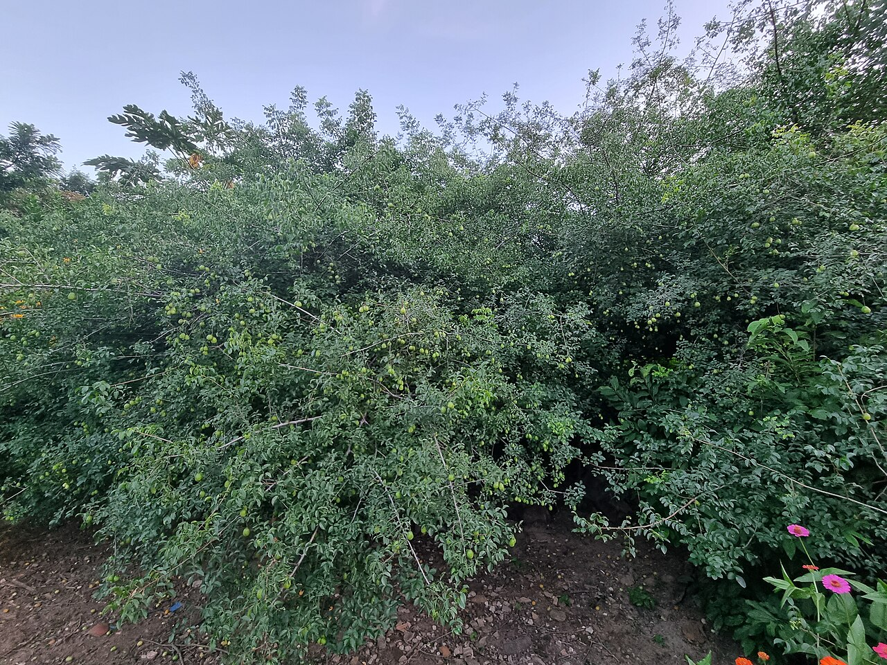

SLM Technology · Value chain

Umbu
Agro-extractivism of the umbu fruit – pulp, jam and juice

Umbuzeiro (Spondias tuberosa) – water-storing icon of the sertão. Photo: Fronteira, CC BY-SA 4.0, via Wikimedia Commons
What it is
Harvesting and processing the fruit of the umbuzeiro (Spondias tuberosa) – the “sacred tree of the sertão,” whose deep tuberous roots store water through the drought (Leal et al., 2003). Its tangy umbu fruit feeds families and a growing economy of pulp, jam and juice (FAO, 2026), central to community approaches such as Recaatingamento.
How it works
- Gather ripe fruit in season; leave fruit and seed for regeneration and fauna
- Process to pulp, jam, sweets and juice (beneficiamento)
- Add value and sell through cooperatives
- Keep the trees – never clear the umbuzeiro
Key facts
- Product
- umbu pulp, jam, juice, sweets
- Tree
- umbuzeiro – deep water-storing roots
- Role
- income that keeps the standing forest valuable
- Linked to
- Recaatingamento, fundo-de-pasto coops
Note
The umbuzeiro is worth far more alive than cleared – the economic case for conservation in one tree.
WOCAT classification
- Measures
- VMVegetative · Management
- WOCAT group
- Natural and semi-natural forest management
- Degradation addressed
- Biological degradation
Classified per the WOCAT SLM-Technologies classification.
✦Source and links
- • Araújo Filho – Recaatingamento / umbu (MMA)
- • DRIP Manual 03 – Native value chains
- • Caatinga · sustainable management
Sources (APA, 7th ed.).
- Food and Agriculture Organization of the United Nations [FAO]. (2026). Drylands Restoration Initiatives Platform: Caatinga knowledge products. DRIP. Caatinga biome.
- Leal, I. R., Tabarelli, M., & Silva, J. M. C. da (Eds.). (2003). Ecologia e conservação da Caatinga. Editora Universitária da UFPE. PDF